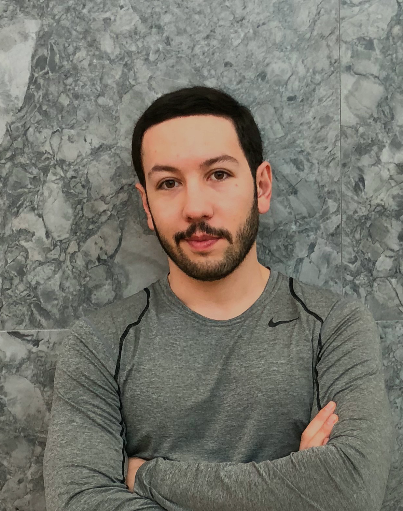

About Me

Hi,
My name is Valareza Fattahi. I'm so excited to show you what I've learned so far in my coding boot-camp as well as my very first website!
I have worked as a construction manager for over a decade. I have managed numerous upscale interior wood work projects in Canada. I am also coming from a strong athlete background. I have been professionally playing tennis and snowboard since I was seven and I hold a position of Tennis coach and Snowboarding instructor.
A few months ago, I decided to initiate a new path in my life and learn coding and web development. I found my self very interested in this field and would like to work as a professional web-developer in the very near future. Further, I am so glad to be part of the
Thanks for stopping by and checking out my portfolio and I hope this would be a great academic adventure for everyone.
Cheers,
Valareza